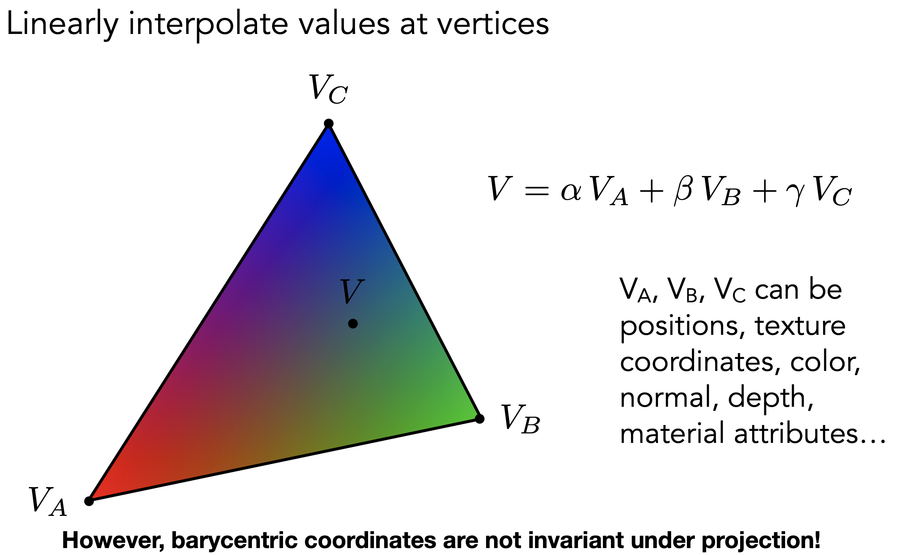
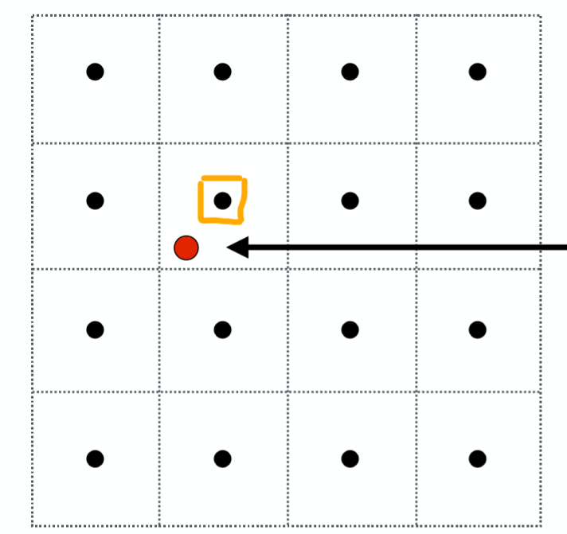
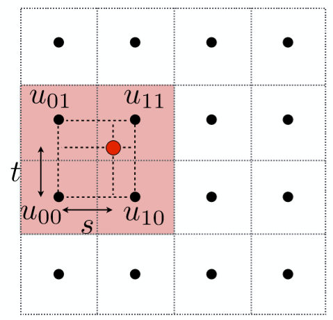
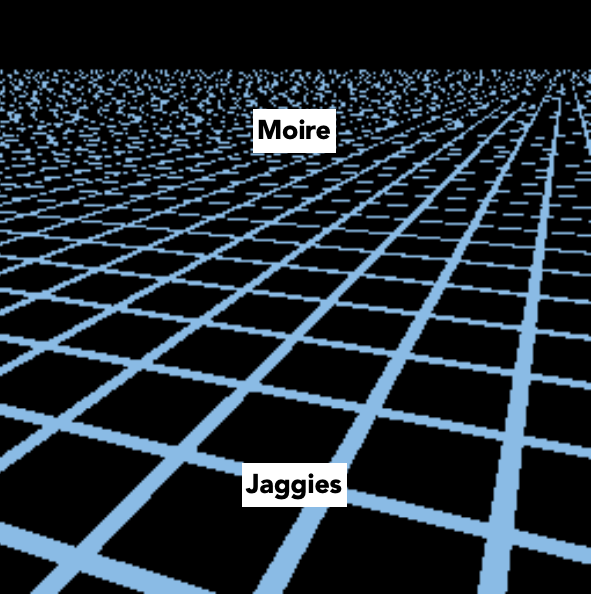
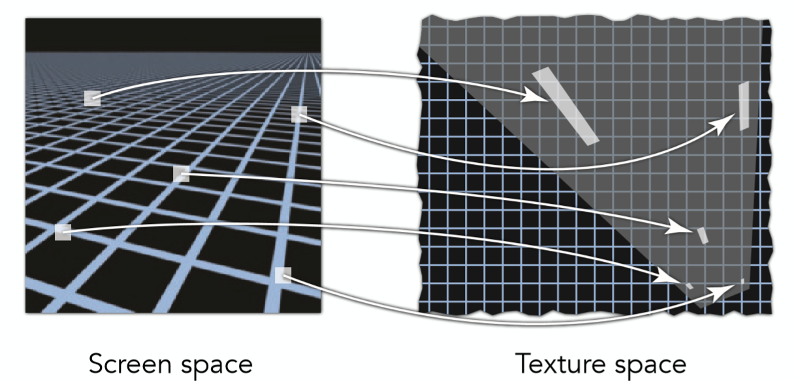
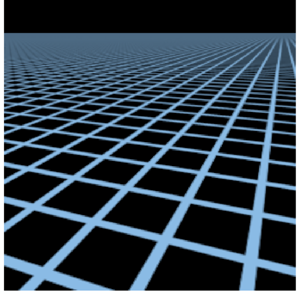

<GAMES101-现代计算机图形学入门> 学习笔记 - 着色2(shading)
文章目录
纹理映射
这个阶段发生在Fragment Processing
把三维空间中的点映射成二维空间的点
纹理空间uv
在纹理空间之内任意一个二维坐标都在[0,1]之内。三维空间的点映射成UV坐标，由自动展UV工具，然后由美术加以修饰，程序员不需要太关心。
查询
重心坐标(barycentric coordinates)
用来计算三角形内部的插值，使得值可以平滑过渡
给定三角形的三点坐标A, B, C，该平面内一点(x,y)可以写成这三点坐标的线性组合形式，即
除了以上的数学定义，还有一种等价定义:
将一点(x,y)与A,B,C三点直接连接，构成三个三角形面积分别为$A_A,A_B,A_C$,即可直接定义出重心坐标如图中公式所示。
不难得出三角形内任意一点的重心坐标：
重心坐标应用
用重心坐标做三角形内部每个点的插值

PS: 重心坐标可以插值很多属性，坐标/法线/纹理
PSS: 三维下的重心坐标经过投影变换之后的二维下的重心坐标 是会发生改变的。
纹理坐标使用

对每个光栅化的屏幕坐标算出它的uv坐标(利用三角形顶点重心坐标插值)，再利用这个uv坐标去查询texture上的颜色，把这个颜色信息当作漫反射系数Kd
纹理过小和纹理过大的问题以及解决方案
纹理过小
纹理过小的问题相对容易理解，我们把一张100x100的纹理贴图应用在一500x500的屏幕之上必然会导致走样失真， 因为屏幕空间的几个像素点对应在纹理贴图的坐标上会集中在一个点（换句话说，就是多个像素公用了同一个纹理坐标）, 这样往往会造成严重的走样。

如图中红色点是屏幕空间下一像素所对应在texture空间中的点，由于纹理小，所以屏幕空间这个像素并不能在纹理中找到一个对应的值，只能去选择离他最近的那个橙色框起来的点。
双线性插值(bilinear Interpolation)
第一步，取出离红色点最近的4个黑色顶点，分别算出，该红色点在水平及竖直方向偏移的比率s,t，图示如下:

接着先利用s，水平方向上进行线性插值出如下图所示的u0，u1点的颜色值
最后我们从竖直方向进行插值，求得最后的结果:$f(x,y)=lerp(t,u_0,u_1)$
下面看看双线性插值的效果
经过双线插值之后，眼镜那里的锯齿明显柔和了很多。Bicubic是更好的插值算法，不过一般情况下双线性也够用了，而且它增加的计算量并不是很多
纹理过大
以前我也一直认为，图小了会不好办，大了应该是不会有问题的？然而事实上却是会这样，大了反而会引起更加严重的走样问题。
假设下面的这幅图
当我们使用比较大的贴图时,远处出现了摩尔纹，近处出现了锯齿。

为什么会这样呢？我们看看这个纹理选择过程：

因为这个是一张贴图重复利用，根据近大远小，远处的一张完整的贴图可能在屏幕空间中仅仅是几个像素的大小，那么必然屏幕空间的一个像素对应了纹理贴图上的一片范围的点， 这其实就是纹理过大所导致的，直观来说想用一个点采样的结果代替纹理空间一片范围的颜色信息，必然会导致严重失真！(从信号的角度来说就是，采样频率过低无法还原信号原貌)
换个角度来看，假设纹理是50*50，屏幕是10*10，那么屏幕中一个像素就是纹理中的25个纹理像素了。而我们只用一个采样点来对这个5*5的区域采样，那么肯定是有问题的。那么第一个反应就是 可以用MSAA这样的超采样(supersampling)方法来解决。下面看看512倍的超采样
效果好很多了，但是消耗太巨大了，一个像素分割了512*512个采样点。而且远处的效果也不太好。那么有没有一种技术可以快速的算出屏幕像素对应的所有texels的颜色均值呢？有那就是Mipmap了
Mipmap
一个采样点的颜色信息不足以代表“footprint”里一个区域的颜色信息，如果可以求出这样一个区域里面所有颜色的均值，是不是就是一种可行的方法呢？ 所以我们的目标就是从点查询Point Query迈向区域查询Range Query。但依然存在一个问题，不同的屏幕像素所对应的footprint size是不一样大小的，看下图这样一个例子
远处圆圈里的footprint必然比近处的要大，因此必须要准备不同level的区域查询才可以，而这正是Mipmap - Allowing (fast, approx., square) range queries。

level 0代表的是原始texture，也是精度最高的纹理，随着level的提升，每提升一级将4个相邻像素点求均值合为一个像素点，因此越高的level也就代表了更大的footprint的区域查询。 接下来要做的就是根据屏幕像素的footprint大小选定不同level的texture，再进行点查询即可，而这其实就相当于在原始texture上进行了区域查询！
但是怎么确定用哪一个level呢？

在屏幕空间中取当前像素点的右方和上方的两个相邻像素点(4个全取也可以)，分别查询得到这3个点对应在Texture space的坐标，计算出当前像素点与右方像素点和上方像素点在Texture space的距离， 二者取最大值，计算公式如图中所示，那么level D就是这个距离的log2值 ($D=log_{2}L$) 。这不难理解，读者可以具体取几个例子比如L = 1，L = 2，L = 4，看看是否符合这样的计算即可。
但是这里D值算出来是一个连续值，并不是一个整数，而我们的Level都是整数，这里有两种对应的方法：
- 四舍五入取得最近的那个level D
- 利用D值在 向下和向上取整的两个不同level进行3线性插值
第一个方法很容易理解，具体讲述一下第二个方法，如图:

所谓3线性插值，就是在向下取整的D level上进行一次双线性插值(前文提过)，再在D+1 level之上进行一次双线性插值， 这二者数据再根据实际的连续D值在向下和向上取整的两个不同level之间的比例，再来一次线性插值，而这整体就是一个三线性插值了。效果如图:
效果是不错了，但是远处的就太模糊了，为什么会这样的呢？
各向异性过滤Mipmap - Nipmap
产生上面现象的原因是因为，所采用的不同level的Mipmap默认的都是正方形区域的Range Query，然而真实情况并不是如此，见下图:

可以看出不同screen space的像素点所对应的footprint是不同的，有长方形，甚至是不规则图形，那么针对这种情况，有的所需要的是仅仅是水平方向的高level， 有的需要的仅仅是竖直方向上的高level，因此这也就启发了各向异性过滤:
利用这样不同的贴图，更加精细的选择后结果就会明显好很多,远处模糊的现象已经大大减少了

参考
文章作者 dingding
上次更新 2020-06-27